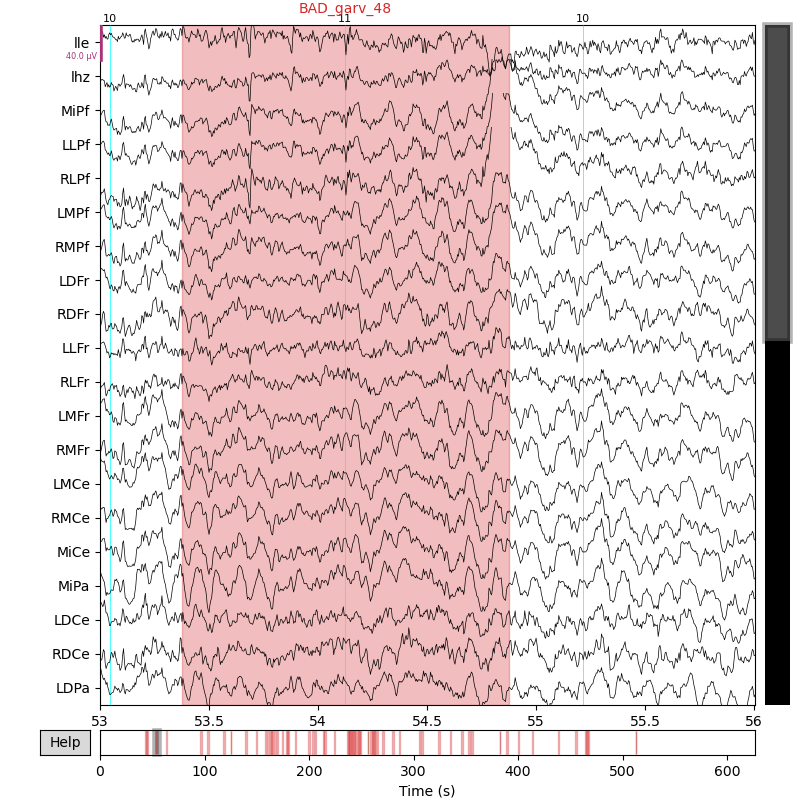

Note
Click here to download the full example code
Quickstart: mkh5 to MNE
The sample data is a single subject mkh5 data file for an auditory oddball paradigm.
FYI … environment and versions. The MNE browser backend is set for generating these docs.
import os
import mne
import mkpy
from mkpy.io import mkh5mne
mne.viz.set_browser_backend("matplotlib")
print("conda env", os.environ["CONDA_DEFAULT_ENV"])
for pkg in [mkpy, mne]:
print(pkg.__name__, pkg.__version__)
Out:
conda env env_3.8
mkpy 0.2.7
mne 1.0.3
mkh5mne.from_mkh5()
Import an mkh5 file into the MNE ecosystem
MNE requires electrode locations. Include them in .yhdr YAML file when creating the mkh5 data or add them when converting to MNE as shown here. The apparatus map format is the same.
Adding garv annotations is optional but enables the MNE automatic rejection option for creating epochs.
mne_raw = mkh5mne.from_mkh5(
"../mkh5_data/sub000p3.h5", # file to convert
apparatus_yaml="mne_32chan_xyz_spherical.yml", # electrode locations
garv_annotations={
"event_channel": "ms1500", # annotate events on this channel
"tmin": -750,
"tmax": 750,
"units": "ms",
},
)
Out:
../mkh5_data/sub000p3.h5
looking up data block paths, larger files take longer ...
ok
/usr/share/miniconda/envs/env_3.8/lib/python3.8/site-packages/mkpy/io/mkh5mne.py:1190: UserWarning: Overriding /sub000/dblock_0 with sensor locations from mne_32chan_xyz_spherical.yml
warnings.warn(msg)
checking info, montage sub000/dblock_1
/usr/share/miniconda/envs/env_3.8/lib/python3.8/site-packages/mkpy/io/mkh5mne.py:1190: UserWarning: Overriding /sub000/dblock_1 with sensor locations from mne_32chan_xyz_spherical.yml
warnings.warn(msg)
checking info, montage sub000/dblock_2
/usr/share/miniconda/envs/env_3.8/lib/python3.8/site-packages/mkpy/io/mkh5mne.py:1190: UserWarning: Overriding /sub000/dblock_2 with sensor locations from mne_32chan_xyz_spherical.yml
warnings.warn(msg)
checking info, montage sub000/dblock_3
/usr/share/miniconda/envs/env_3.8/lib/python3.8/site-packages/mkpy/io/mkh5mne.py:1190: UserWarning: Overriding /sub000/dblock_3 with sensor locations from mne_32chan_xyz_spherical.yml
warnings.warn(msg)
checking info, montage sub000/dblock_4
/usr/share/miniconda/envs/env_3.8/lib/python3.8/site-packages/mkpy/io/mkh5mne.py:1190: UserWarning: Overriding /sub000/dblock_4 with sensor locations from mne_32chan_xyz_spherical.yml
warnings.warn(msg)
/usr/share/miniconda/envs/env_3.8/lib/python3.8/site-packages/mkpy/io/mkh5mne.py:1190: UserWarning: Overriding /sub000/dblock_0 with sensor locations from mne_32chan_xyz_spherical.yml
warnings.warn(msg)
Creating RawArray with float64 data, n_channels=39, n_times=31232
Range : 0 ... 31231 = 0.000 ... 124.924 secs
Ready.
/usr/share/miniconda/envs/env_3.8/lib/python3.8/site-packages/mkpy/io/mkh5mne.py:1478: RuntimeWarning: Not setting position of 1 eog channel found in montage:
['HEOG']
Consider setting the channel types to be of EEG/sEEG/ECoG/DBS/fNIRS using inst.set_channel_types before calling inst.set_montage, or omit these channels when creating your montage.
raw_dblock.set_montage(montage)
sub000/dblock_0 setting mkh5 epochs table ms100 events and metadata
sub000/dblock_0 setting mkh5 epochs table ms10000 events and metadata
sub000/dblock_0 setting mkh5 epochs table ms1500 events and metadata
sub000/dblock_0 setting mkh5 epochs table ms3000 events and metadata
annotating garv artifacts {'event_channel': 'ms1500', 'tmin': -750, 'tmax': 750, 'units': 'ms'}
/usr/share/miniconda/envs/env_3.8/lib/python3.8/site-packages/mkpy/io/mkh5mne.py:1190: UserWarning: Overriding /sub000/dblock_1 with sensor locations from mne_32chan_xyz_spherical.yml
warnings.warn(msg)
Creating RawArray with float64 data, n_channels=39, n_times=32768
Range : 0 ... 32767 = 0.000 ... 131.068 secs
Ready.
/usr/share/miniconda/envs/env_3.8/lib/python3.8/site-packages/mkpy/io/mkh5mne.py:1478: RuntimeWarning: Not setting position of 1 eog channel found in montage:
['HEOG']
Consider setting the channel types to be of EEG/sEEG/ECoG/DBS/fNIRS using inst.set_channel_types before calling inst.set_montage, or omit these channels when creating your montage.
raw_dblock.set_montage(montage)
sub000/dblock_1 setting mkh5 epochs table ms100 events and metadata
sub000/dblock_1 setting mkh5 epochs table ms10000 events and metadata
sub000/dblock_1 setting mkh5 epochs table ms1500 events and metadata
sub000/dblock_1 setting mkh5 epochs table ms3000 events and metadata
annotating garv artifacts {'event_channel': 'ms1500', 'tmin': -750, 'tmax': 750, 'units': 'ms'}
/usr/share/miniconda/envs/env_3.8/lib/python3.8/site-packages/mkpy/io/mkh5mne.py:1190: UserWarning: Overriding /sub000/dblock_2 with sensor locations from mne_32chan_xyz_spherical.yml
warnings.warn(msg)
Creating RawArray with float64 data, n_channels=39, n_times=31744
Range : 0 ... 31743 = 0.000 ... 126.972 secs
Ready.
/usr/share/miniconda/envs/env_3.8/lib/python3.8/site-packages/mkpy/io/mkh5mne.py:1478: RuntimeWarning: Not setting position of 1 eog channel found in montage:
['HEOG']
Consider setting the channel types to be of EEG/sEEG/ECoG/DBS/fNIRS using inst.set_channel_types before calling inst.set_montage, or omit these channels when creating your montage.
raw_dblock.set_montage(montage)
sub000/dblock_2 setting mkh5 epochs table ms100 events and metadata
sub000/dblock_2 setting mkh5 epochs table ms10000 events and metadata
sub000/dblock_2 setting mkh5 epochs table ms1500 events and metadata
sub000/dblock_2 setting mkh5 epochs table ms3000 events and metadata
annotating garv artifacts {'event_channel': 'ms1500', 'tmin': -750, 'tmax': 750, 'units': 'ms'}
/usr/share/miniconda/envs/env_3.8/lib/python3.8/site-packages/mkpy/io/mkh5mne.py:1190: UserWarning: Overriding /sub000/dblock_3 with sensor locations from mne_32chan_xyz_spherical.yml
warnings.warn(msg)
Creating RawArray with float64 data, n_channels=39, n_times=32512
Range : 0 ... 32511 = 0.000 ... 130.044 secs
Ready.
/usr/share/miniconda/envs/env_3.8/lib/python3.8/site-packages/mkpy/io/mkh5mne.py:1478: RuntimeWarning: Not setting position of 1 eog channel found in montage:
['HEOG']
Consider setting the channel types to be of EEG/sEEG/ECoG/DBS/fNIRS using inst.set_channel_types before calling inst.set_montage, or omit these channels when creating your montage.
raw_dblock.set_montage(montage)
sub000/dblock_3 setting mkh5 epochs table ms100 events and metadata
sub000/dblock_3 setting mkh5 epochs table ms10000 events and metadata
sub000/dblock_3 setting mkh5 epochs table ms1500 events and metadata
sub000/dblock_3 setting mkh5 epochs table ms3000 events and metadata
annotating garv artifacts {'event_channel': 'ms1500', 'tmin': -750, 'tmax': 750, 'units': 'ms'}
/usr/share/miniconda/envs/env_3.8/lib/python3.8/site-packages/mkpy/io/mkh5mne.py:1190: UserWarning: Overriding /sub000/dblock_4 with sensor locations from mne_32chan_xyz_spherical.yml
warnings.warn(msg)
Creating RawArray with float64 data, n_channels=39, n_times=28416
Range : 0 ... 28415 = 0.000 ... 113.660 secs
Ready.
/usr/share/miniconda/envs/env_3.8/lib/python3.8/site-packages/mkpy/io/mkh5mne.py:1478: RuntimeWarning: Not setting position of 1 eog channel found in montage:
['HEOG']
Consider setting the channel types to be of EEG/sEEG/ECoG/DBS/fNIRS using inst.set_channel_types before calling inst.set_montage, or omit these channels when creating your montage.
raw_dblock.set_montage(montage)
sub000/dblock_4 setting mkh5 epochs table ms100 events and metadata
sub000/dblock_4 setting mkh5 epochs table ms10000 events and metadata
sub000/dblock_4 setting mkh5 epochs table ms1500 events and metadata
sub000/dblock_4 setting mkh5 epochs table ms3000 events and metadata
annotating garv artifacts {'event_channel': 'ms1500', 'tmin': -750, 'tmax': 750, 'units': 'ms'}
EEG data marked as already having the desired reference.
Now run other mkh5mne functions and native MNE methods on mne_raw
# mkpy.io.mkh5mne custom event finder
p3_events = mkh5mne.find_mkh5_events(mne_raw, "ms1500")
# MNE native ploting
_ = mne_raw.plot(
p3_events,
start=53.0,
duration=3.0,
)
_ = mne.viz.plot_sensors(mne_raw.info)
- 

Out:
Opening raw-browser...
mkh5mne.get_epochs()
Create a native mne.Epochs and attach the event
tags from a named mkh5 epochs table as the mne.Epochs.metadata.
Pass in the same arguments and key word arguments as you would for
mne.Epochs().
mne_epochs = mkh5mne.get_epochs(
mne_raw,
"ms1500",
preload=True, # populate the Epochs with data and apply projections
reject_by_annotation=True, # drop the BAD_* annotations or set False to keep them
baseline=(-0.2, 0.0), # center on this interval
)
mne_epochs
Out:
Adding metadata with 40 columns
600 matching events found
Applying baseline correction (mode: mean)
0 projection items activated
Using data from preloaded Raw for 600 events and 376 original time points ...
131 bad epochs dropped
Gotcha: mne.find_events() IS UNSAFE
Warning
Use mkh5 data use mkh5mne.find_mkh5_events() to create
MNE event arrays. DO NOT use the native MNE
mne.find_events() the results may be incorrect.
Various MNE raw data methods including plotting and epoching ingest a 3-column event_array of [sample, 0, event] that says where (column 0) and what (column 2) the events are.
The event array data format is sound and processing event arrays is reliable.
Unfortunately the native MNE event lookup utility
mne.find_events() for creating event arrays from
event channels forcibly converts negative events to positive.
Te .crw/.log/mkh5 data format routinely uses negative event codes for pause marks, data errors, and manually logpoked negative event codes. Changing the sign to positive folds them back back into the experimental event code range and creates creates spurious events.
Total running time of the script: ( 0 minutes 22.058 seconds)